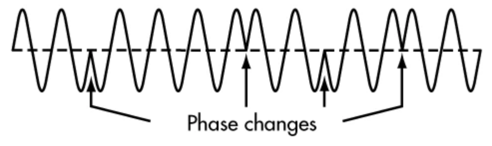
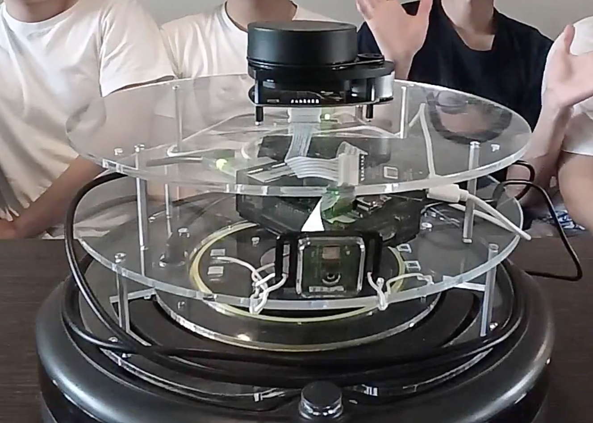
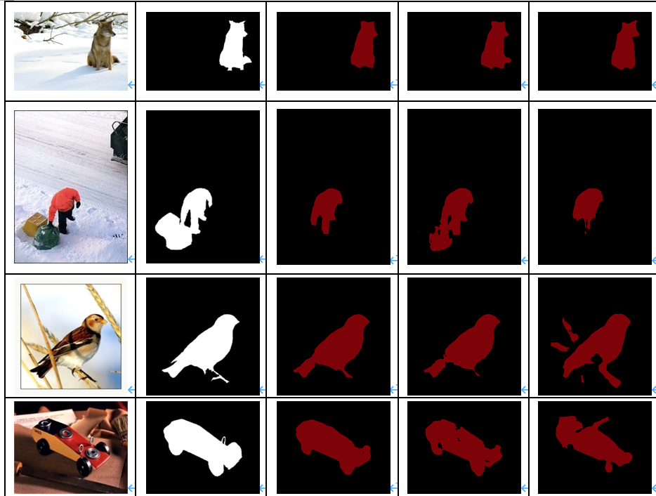
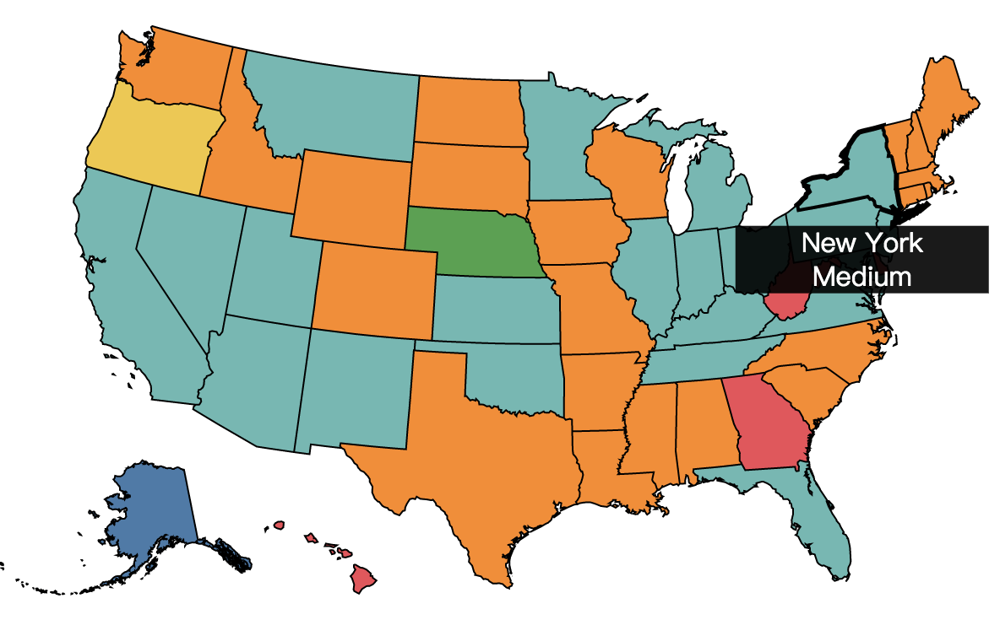
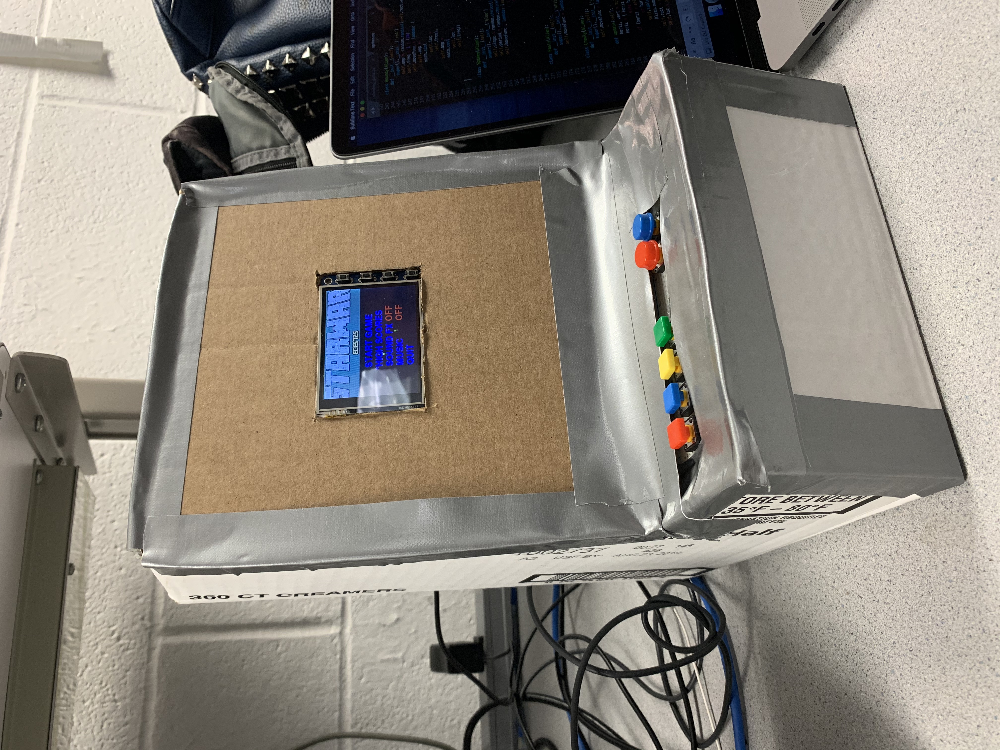

|
Xu Ouyang
I am a Master of Engineering student in Cornell's Department of Electrical and Computer Engineering, where I work on Computer Vision / Efficent Deep Learning / HLS for DL and Robotics.
At Cornell, I'm fortunate to be advised by Prof. Zhiru Zhang on efficent deep learning & HLS. I worked with Joe Skovira on robotics as well.
I received my B.Eng degree on Science and Technology of Electronics in Northwestern Polytechnical University and was also furtunate to work with Prof. Yuchao Dai on visual saliency.
Email /
CV /
Github /
Linkedin
|
|
|
|
DAC-SDC contest 2021
Cornell University, 2020.4 - present, advised by Prof. Zhiru Zhang
Applying model quantization and other techniques to create an efficent object detection model which boosts both accuracy and FPS in a low-resource scenario, like FPGA.
|
|

|
[Kaggle Contest] Signal Modulation Classification
Cornell University, 2020.4-5
code
Building a deep learning classifier that predicts the modulation scheme that was used for encoding a noisy incoming signal.
Final ranking: 4/103
|
|

|
Remote Roomba robot system
Cornell University, 2019.10 - 2020.5, advised by Joe Skovira
code
Developing a remote control system for Roomba using Raspberry Pi, LiDAR and Android device. The system has functions like remote movement control, video display on Android device, map generating, random walking and mode switching.
|
|

|
Object Detection of UAV Platform based on Visual Saliency
NPU, 2019, adviced by Prof. Yuchao Dai
Based on human visual saliency mechanism and Google's Deeplab V3+ architecture, the network is improved to achieve salient target prediction. Combining the manual feature preprocess and deep learning network.
|
|

|
Visualization of Global Warming in US and the World
Cornell University, 2020.4
code
Working with data in the context of modern web applications using D3.js. These include data representation with relational and non-relational databases, data mining to find patterns and make predictions, and visualization design.
|
|

|
Arcade Game Machine
Cornell University, 2019.11-12
Implementing the game by Pygame. Finished collision detection, movement, background and music and other game functions.
Designing and Implementing Raspberry Pi and other hardwares to control the warcraft.
|
|
· Overall Winner, Robotics and Artificial Intelligence Winter Contest, Imperial College, 2018.2
· Honorable Mention, Mathematical Contest in Modeling, 2017
· 2nd Prize, Asia and Pacific Mathematical Contest in Modeling, 2017
· Excellent Student, NPU, 2017, 2018
· Kewei Special Scholarship, 2017 (top 2.2%)
· The First-class Scholarship, NPU, 2017 (1/323)
|
|
{kind=link}